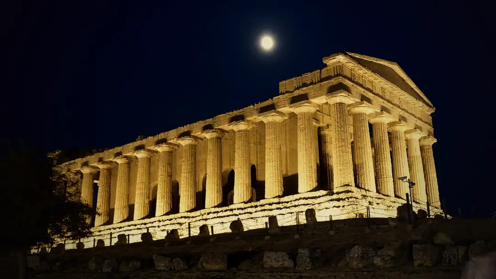
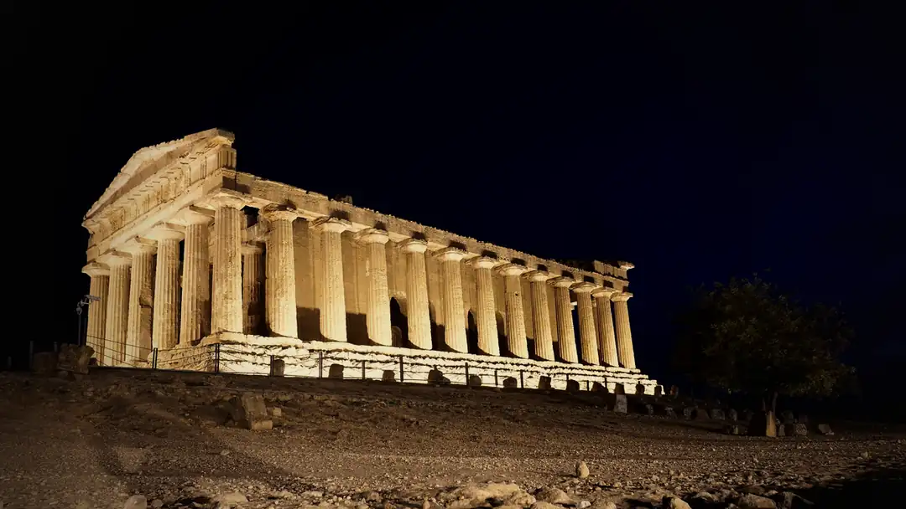
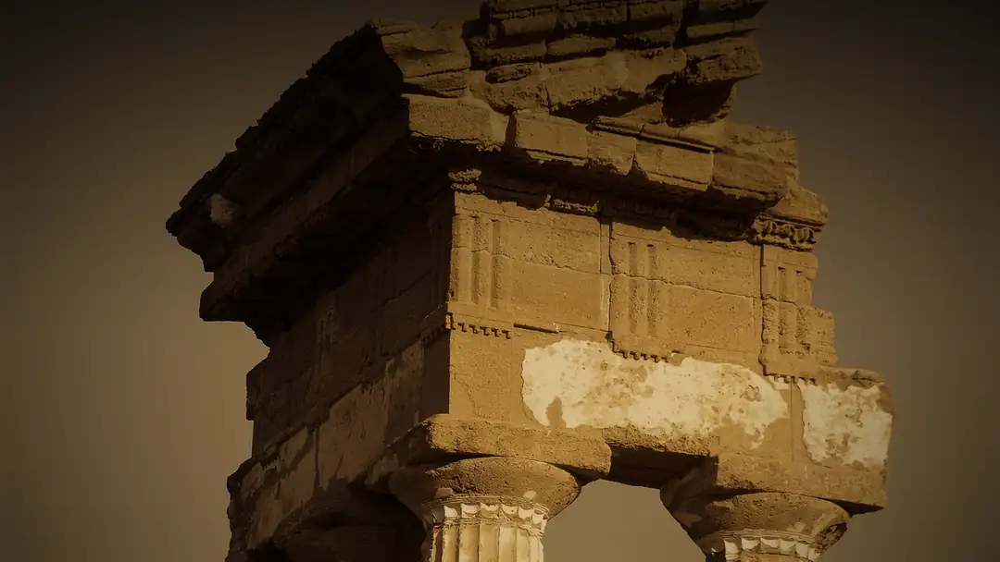
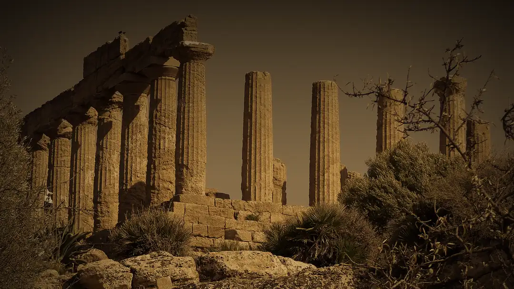
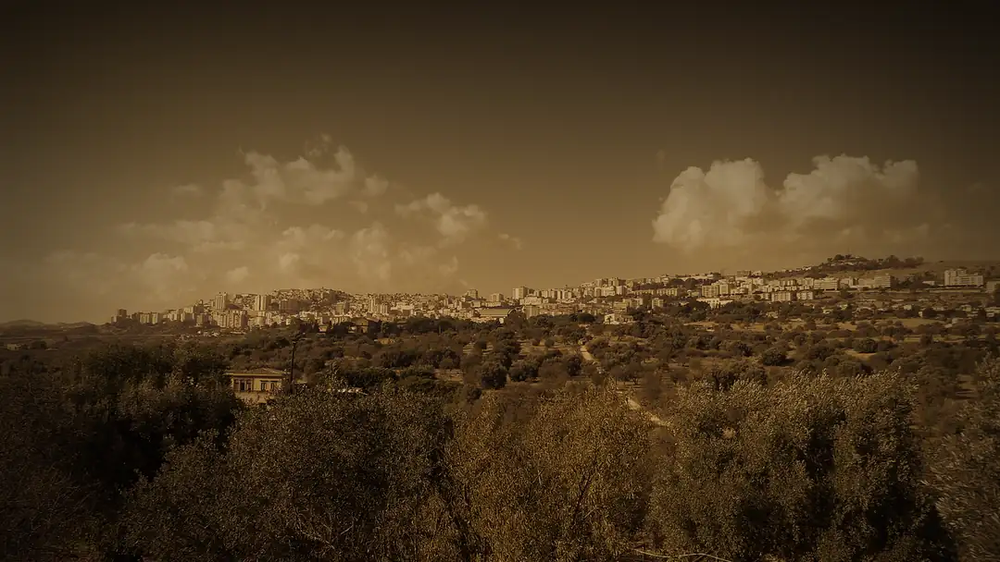

Ristorante Boulevard — Ristorante und Pizzeria in Agrigento, Sizilien
Agrigento · Sicilia
Sizilianisch essenim Licht der Laterne
Fisch vom Markt, Pasta wie zu Hause und Pizza aus dem Holzofen — zehn Minuten vom Tal der Tempel, hinter einem Tor aus Efeu.
Benvenuti
Ein Tor, eine Laterne,
und dahinter der Abend.
Das Boulevard liegt im historischen Zentrum von Agrigento, wenige Minuten von der Valle dei Templi entfernt.
Wir kochen sizilianisch — mit Fisch vom Markt in Porto Empedocle.
„Erst die Tempel, dann der Tisch.“
Beides gehört zu einem Tag in Agrigento.
La Valle dei Templi
Zehn Minuten von hier
stehen sie seit 2500 Jahren.





Seitwärts scrollen oder ziehen
La cucina
Die Karte
Menù degustazione
Degustazione
di pesce
30,00 € pro Person Ab 2 Personen
Antipasti
- Insalata di polpoOktopussalat
- Caponata di pesce spadaCaponata mit Schwertfisch
- Cocktail di gamberiGarnelencocktail
- Arancina di pesceFrittierter Reisball mit Fisch
- OstricaAuster
- Alici marinateMarinierte Sardellen
- Zuppa di cozzeMiesmuscheln im Sud
- Tonno in agrodolceThunfisch süßsauer
Primo piatto
Pacchero ai frutti di mare
Pacchero mit Meeresfrüchten — ein Teller für zwei
Wasser inklusive Kaffee oder Digestif
Ist keine frische Ware verfügbar, kann hochwertige Tiefkühlware verwendet werden.
Alla carta
Antipasti
Primi
Dal forno a legna
Secondi & Dolci
Allergene und Zusatzstoffe nennen wir Ihnen gern am Tisch.
Wenn die Tempel angestrahlt werden, geht bei uns die Laterne an. Am Abend im Boulevard
Prenota · Reservierung
Einen Tisch
für Sie
Schreiben Sie uns, wann Sie kommen möchten.